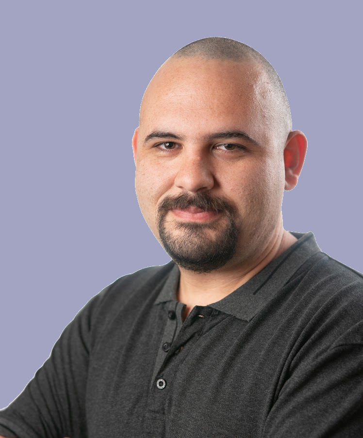

|  |
Shaull Almagor's Homepage
I am currently a postdoc at Oxford University under the supervision of Prof. Joël Ouaknine.
I obtained my PhD in Computer Science (2016) from the Hebrew University of Jerusalem, under the supervision of Prof. Orna Kupferman.
Prior to that, I obtained my M.Sc in Computer Science (2011, summa cum laude) and a B.Sc in Mathematics and Computer Science (2009, magna cum laude), both from the Hebrew University of Jerusalem. |